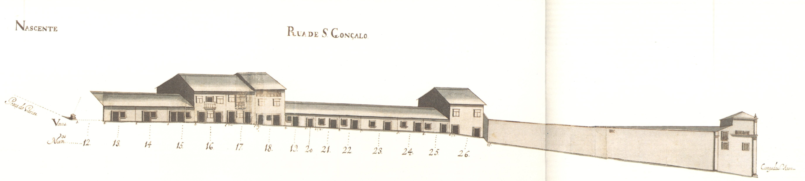

Rua íngreme, pertencente ao complexo urbanístico do campo Novo, ligava esta praça com o campo de Santa Ana.
Aberta também em 1725, tinha em 1750 a parte em declive ocupada por quintais: do lado Nascente, o do Recolhimento das Convertidas e, do oposto, o de uma casa do campo de Santa Ana pertencente ao Mosteiro de Vilar de Frades (o quintal era, porém, prazo do Cabido).
A metade Norte da rua, bastante plana, tinha do lado Nascente, uma série de casas térreas (71,5%): o Poente apresentava bastantes diferenças: não só os edifícios são todos de dois pisos como, também, há uma casa, no prazo n.º 4, com um desenho de fachada diferente, mais moderno, próximo dos da praça do Gavião. No prazo n.º 11 vê-se a fachada lateral de um edifício que tem a frontaria virada à praça do Gavião; é curioso ver-se aqui que todo o programa foi totalmente alterado, mostrando não só que a divisão em dois pisos não foi seguida, permitindo a abertura de janelas de uma forma anárquica, como, também, que essas janelas não têm a «moldura» de pedra que as enobrecia.
Todas as 23 casas aqui apresentadas são prazos do Cabido. No gaveto Nascente havia ainda, nesta data, um lote vazio para construção.
Mantém o nome de rua de S. Gonçalo.
Rua de S.Gonçalo - Vista nascente-

Rua de S.Gonçalo - Vista poente.
Número: 1
Enfiteuta: D. Agostinha Maria de Barros Gavião, enfiteuta principal do prazo do casal dos Chãos ou Quinteiro
Foro: N/A
Pertence à casa n.º 5 do campo de Sta. Ana, para onde tem a frontaria e serventia principais
Número: 2
Enfiteuta: D. Agostinha Maria de Barros Gavião, enfiteuta principal do prazo do casal dos Chãos ou Quinteiro
Foro: N/A
«Chão de casa» do prazo do casal dos Chãos ou Quinteiro.
Número: 3
Enfiteuta: D. Agostinha Maria de Barros Gavião, enfiteuta principal do prazo do casal dos Chãos ou Quinteiro
Foro: N/A
Paga foro ao enfiteuta do prazo do casal dos Chãos ou Quinteiro. Confronta, do norte, com portal do n.º 4.
Número: 4
Enfiteuta: D. Agostinha Maria de Barros Gavião, enfiteuta principal do prazo do casal dos Chãos ou Quinteiro
Foro: N/A
O Padre Inácio Palhares paga 2400 reis ao enfiteuta do prazo do casal dos Chãos ou Quinteiro, conforme o subemprazamento de 1725.
Número: 5
Enfiteuta: D. Agostinha Maria de Barros Gavião, enfiteuta principal do prazo do casal dos Chãos ou Quinteiro
Foro: N/A
António Vieira da Costa, da freguesia de Adaufe, casado com Helena Francisca da Cruz, paga 1200 reis ao enfiteuta do prazo do casal dos Chãos ou Quinteiro, conforme o subemprazamento de 1725.
Número: 6
Enfiteuta: D. Agostinha Maria de Barros Gavião, enfiteuta principal do prazo do casal dos Chãos ou Quinteiro
Foro: N/A
O Padre Jerónimo Vieira paga 1200 reis ao enfiteuta do prazo do casal dos Chãos ou Quinteiro, conforme o subemprazamento de 1725.
Número: 7
Enfiteuta: D. Agostinha Maria de Barros Gavião, enfiteuta principal do prazo do casal dos Chãos ou Quinteiro
Foro: N/A
João Vieira, sombreireiro, casado com Teresa de Sá, paga 1200 reis ao enfiteuta do prazo do casal dos Chãos ou Quinteiro, conforme o subemprazamento de 1726.
Número: 8
Enfiteuta: D. Agostinha Maria de Barros Gavião, enfiteuta principal do prazo do casal dos Chãos ou Quinteiro
Foro: N/A
João Gonçalves, serralheiro, casado com Inocência Rodrigues, paga 1200 reis ao enfiteuta do prazo do casal dos Chãos ou Quinteiro, conforme o subemprazamento de 1725.
Número: 9
Enfiteuta: D. Agostinha Maria de Barros Gavião, enfiteuta principal do prazo do casal dos Chãos ou Quinteiro
Foro: N/A
João Vieira, carpinteiro, casado com Custódia Ferreira, paga 1200 reis ao enfiteuta do prazo do casal dos Chãos ou Quinteiro, conforme o subemprazamento feito em 1725.
Número: 10
Enfiteuta: D. Agostinha Maria de Barros Gavião, enfiteuta principal do prazo do casal dos Chãos ou Quinteiro
Foro: N/A
José de Oliveira, da freguesia de S. Mamede d'Este, casado com Maria Lopes, paga 1200 reis ao enfiteuta do prazo do casal dos Chãos ou Quinteiro, conforme o subemprazamento de 1727.
Número: 11
Enfiteuta: D. Agostinha Maria de Barros Gavião, enfiteuta principal do prazo do casal dos Chãos ou Quinteiro
Foro: N/A
André Lopes, mestre pedreiro, casado com Maria Francisca, paga 1900 reis ao enfiteuta do prazo do casal dos Chãos ou Quinteiro. A este prazo pertence o n.° 1 da Praça do Gavião. O n.° 11 foi construído depois de 1727 e o ri.° 1 depois de 1735.
Número: 12
Enfiteuta: D. Agostinha Maria de Barros Gavião, enfiteuta principal do prazo do casal dos Chãos ou Quinteiro
Foro: N/A
«Chão de casa» do prazo do casal dos Chãos ou Quinteiro.
Número: 13
Enfiteuta: D. Agostinha Maria de Barros Gavião, enfiteuta principal do prazo do casal dos Chãos ou Quinteiro
Foro: N/A
Bento Garcia, serralheiro, casado com Leonarda da Silva, paga 1200 reis ao enfiteuta do prazo do casal dos Chãos ou Quinteiro, conforme o subemprazamento de 1725.
Número: 14
Enfiteuta: D. Agostinha Maria de Barros Gavião, enfiteuta principal do prazo do casal dos Chãos ou Quinteiro
Foro: N/A
Domingos António, barbeiro, casado com Marta Maria, paga 1200 reis ao enfiteuta do prazo do casal dos Chãos ou Quinteiro, conforme subemprazamento de 1725.
Número: 15
Enfiteuta: D. Agostinha Maria de Barros Gavião, enfiteuta principal do prazo do casal dos Chãos ou Quinteiro
Foro: N/A
Miguel Rodrigues, espingardeiro, casado com Ana Rodrigues, paga 1200 reis ao enfiteuta do prazo do casal dos Chãos ou Quinteiro, conforme o subemprazamento de 1726.
Número: 16 e 17
Enfiteuta: D. Agostinha Maria de Barros Gavião, enfiteuta principal do prazo do casal dos Chãos ou Quinteiro
Foro: N/A
André da Silva, albardeiro, casado com Maria Francisca, paga, por cada uma das casas, 1200 reis ao enfiteuta do prazo do casal dos Chãos ou Quinteiro, conforme os subemprazamentos de 1726.
Número: 18
Enfiteuta: D. Agostinha Maria de Barros Gavião, enfiteuta principal do prazo do casal dos Chãos ou Quinteiro
Foro: N/A
Pedro Mendes, alfaiate, casado com Rosa Teixeira, paga 1500 reis ao enfiteuta do prazo do casal dos Chãos ou Quinteiro, conforme o subemprazamento de 1725.
Número: 19 e 20
Enfiteuta: D. Agostinha Maria de Barros Gavião, enfiteuta principal do prazo do casal dos Chãos ou Quinteiro
Foro: N/A
André da Silva, casado com Maria Francisca, paga 600 reis ao enfiteuta do prazo do casal dos Chãos ou Quinteiro, conforme o subemprazamento de 1726.
Número: 21 e 26
Enfiteuta: D. Agostinha Maria de Barros Gavião, enfiteuta principal do prazo do casal dos Chãos ou Quinteiro
Foro: N/A
André da Silva, albardeiro, casado com Maria Francisca, paga 3710 reis ao enfiteuta do prazo do casal dos Chãos ou Quinteiro, à face do qual foi subemprazado, no ano de 1732. A casa n.º 26 correspondia, antes desta data, a duas moradas de casas. Confronta, do sul, com o quintal do Recolhimento de Sta. Maria Madalena.